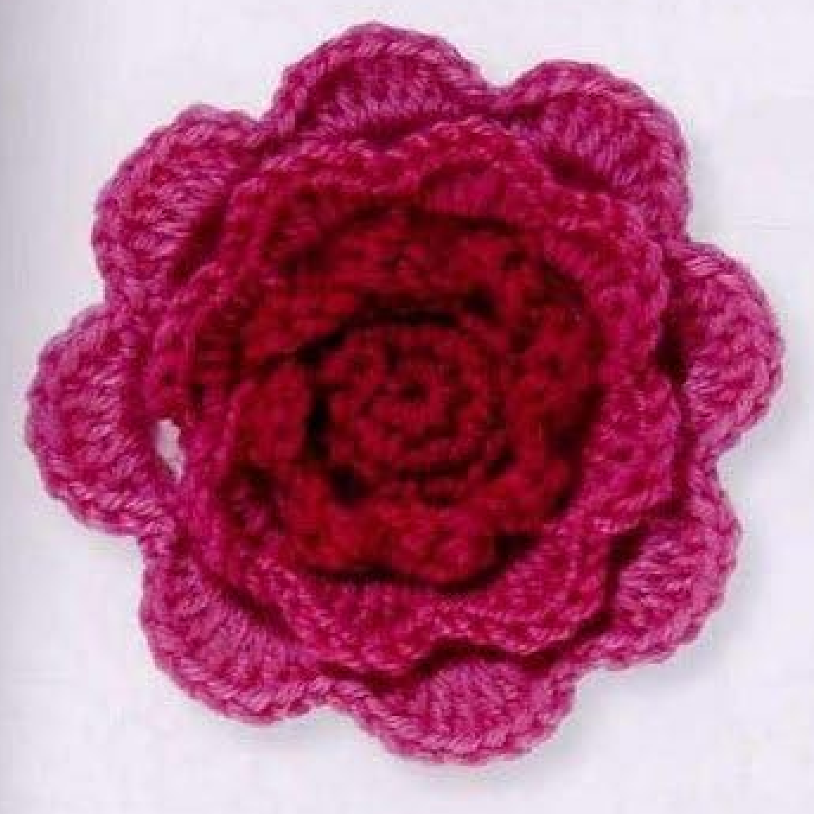
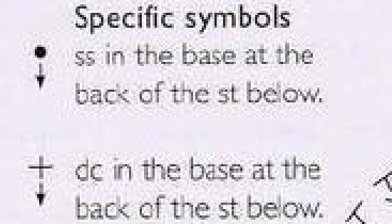
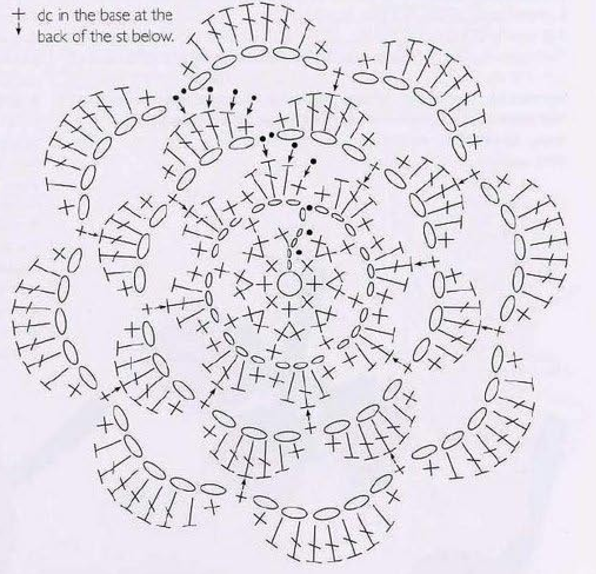
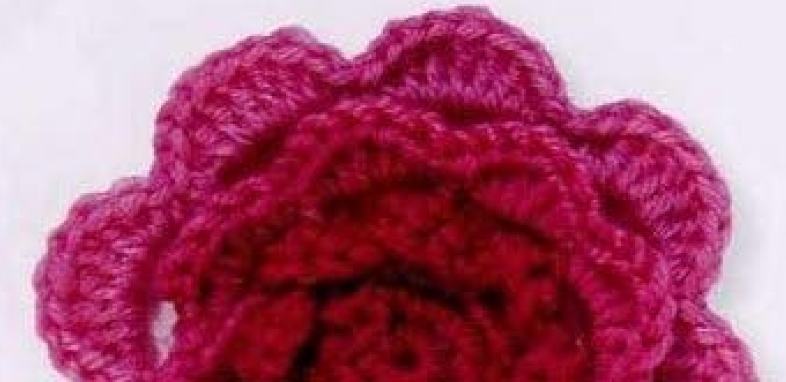
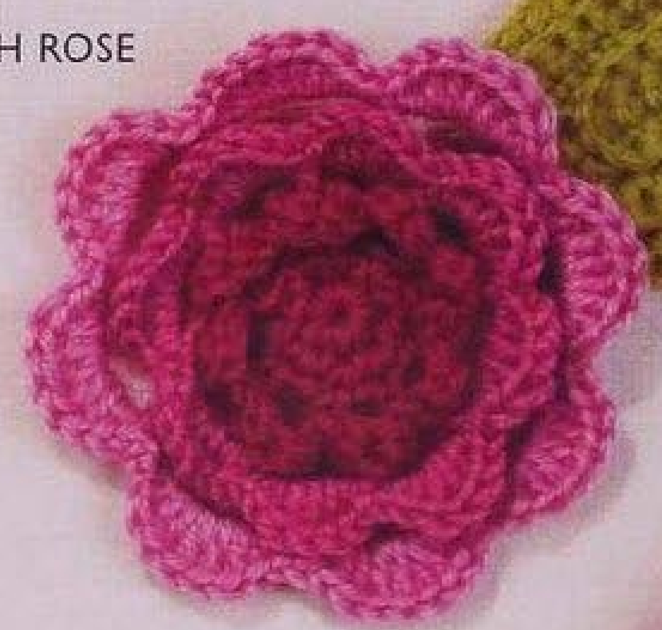

Crochet Irish Rose builds three scalloped petal tiers around a small center, changing from deep pink through mid pink to pale pink. Each tier has eight petals, with the later chain arches attached to stitch bases behind the previous tier. This guide follows pattern 62 in Lesley Stanfield’s 100 Flowers to Knit & Crochet, preserving its eight-round recipe and rear attachment route in US crochet terms.

Key Takeaways
- Use 4-ply wool in deep pink A, mid pink B, and pale pink C.
- The center grows from eight counted positions to sixteen.
- Eight initial chain spaces support the smallest petal tier.
- Fold petals forward to reach the rear stitch bases for the next arches.
- Middle petals have three US doubles; outer petals have five US doubles.
- Every tier retains eight petals, and the rose has no separately supplied stem or leaf.
CROCHET IRISH ROSE FLOWER PATTERN
Project: One rose with three eight-petal tiers. This entry is among the book’s intermediate designs. The original rounds are translated into US terminology. Hook, gauge, quantity, and finished dimensions are not specified.
| Skill level | Intermediate designs in the source. Practical guidance: recognize rear stitch bases and work new arches behind finished petals. |
|---|---|
| Base size | One rose with 3 tiers of 8 petals each. Measurements are not specified. |
| Yarn | 4-ply wool in deep pink A, mid pink B, and pale pink C. |
| Quantity, hook, gauge | Not specified. Choose a hook suited to the wool and assess the center and first petal tier. |
| Notions | Scissors and a blunt needle for tidy color ends and finishing. |
| US abbreviations | ch = chain; sc = single crochet; hdc = half double crochet; dc = double crochet; sl st = slip stitch; RS = right side. UK dc = US sc; UK htr = US hdc; UK tr = US dc. Rear base means the two strands forming the base at the back of the indicated stitch. |
| Round 1, RS | With A, make an adjustable slip ring. Ch 2, work 7 sc in the ring, pull the end to close the ring, and sl st to the top chain of the opening ch 2. 8 counted positions. |
| Round 2 | Ch 2, 1 sc in the base of the first starting chain, 2 sc in each of the next 7 stitches, sl st to the top chain of the opening ch 2. 16 counted positions. |
| Round 3 | Ch 4; [skip 1 sc, 1 sc in the next sc, ch 3] 7 times. Sl st to the first chain of the opening ch 4. 8 chain spaces. |
| Round 4 | Work [sc, hdc, dc, hdc, sc] in each chain space. 8 petals. Fasten off with B and continue with B, as directed by the source. |
| Round 5 | Fold the petals forward and work at their backs. Sl st into the 2 base strands of each of the first 3 stitches of the next petal. [Ch 3, 1 sc in the rear base of the center dc of the next petal] 7 times. Ch 3, sl st in the third of the initial 3 slip stitches. |
| Round 6 | Work [sc, hdc, 3 dc, hdc, sc] in each chain space. Fasten off with C and continue with C, as directed by the source. |
| Round 7 | Fold the petals forward and work at their backs as before. Sl st in the rear base of each of the next 4 stitches. [Ch 5, 1 sc in the rear base of the center dc] 7 times. Ch 5, sl st in the fourth of the initial 4 slip stitches. Follow successive petal centers around the tier. |
| Round 8 | Work [sc, hdc, 5 dc, hdc, sc] in each chain space. Fasten off. |
| Finishing | Secure ends on the back and arrange the three tiers. The separate Irish Leaf seen nearby in the directory is not included in this rose recipe. |
Understand the Three Petal Tiers
The rose is built in rounds, not coiled from a long strip. Its first two rounds make a compact center. Round 3 adds eight arches and round 4 fills them with the smallest petal groups. Rounds 5 and 6 make the middle tier, and rounds 7 and 8 make the outer tier.
The later arches are attached behind the completed petals. Folding those petals forward exposes the rear bases of their stitch columns, allowing the new tier to sit behind the old one. This creates the layered form without separately crocheting and sewing on every petal.
All three tiers retain eight petals. Their size increases through the number of US doubles in each filled arch: one in the first tier, three in the middle, and five in the outer. The source changes shades at the tier transitions, with the deepest pink inside and the palest pink outside.
Prepare Wool and Keep the Color Roles Clear
Use deep pink A, mid pink B, and pale pink C in 4-ply wool. Comparable thickness across shades helps the tiers build consistently. The source photographs show a pink gradient, while the written entry specifies the color roles and the construction that creates the layered rose.
No hook size, numerical gauge, yarn quantity, or finished diameter is supplied. Choose a hook suited to your wool and assess the center and first petal tier. Later rounds need access to the back stitch bases, so very tight stitches can make the rear placement difficult even when the counts are correct.
Keep scissors and a blunt needle available for ring and color ends. Optional markers can identify the first rear attachment or a petal’s center double while learning the route. These are temporary aids, not extra crochet stitches or added attachment points.
US Terms and Rear Stitch Bases
The book’s UK double crochet becomes US single, half treble becomes US half double, and treble becomes US double. The first petal group therefore reads single, half double, double, half double, single. The later groups retain the short edge stitches while adding more actual doubles through their middle.
The chart’s special symbols identify slip stitches and singles at the base on the back of the stitch below. These placements are lower than the familiar V at a stitch top. The written round 5 instruction specifies the two strands that form the base of each indicated petal stitch.
Fold the petal forward and inspect its back before inserting the hook. Identify the base of the named stitch rather than catching an arbitrary surface strand. The new arches need a consistent route through successive petal centers to support the next tier evenly.

Rear-placement checkpoint: The later arches attach to stitch bases behind earlier petals. Do not substitute the front stitch tops or sew separate petal rings onto the center.
Step 1: Make the Eight-Position Center
With A and the right side facing, make an adjustable slip ring. Chain two, work seven US singles into the ring, and pull the end to close it. Join with a slip stitch to the top chain of the opening two-chain rise.
The source count is eight: seven actual singles plus the counted rise. Keep the start identifiable for the following increase round. Making eight actual singles in addition to the rise creates an extra position and changes the sixteen-position count that follows.
Secure the adjustable-ring end later through established stitches on the back rather than trimming it flush immediately. Keep the center compact without pulling its stitch tops into an inaccessible knot. The rose’s first arches will be worked around the expanded center, not through the ring itself.
Step 2: Expand to Sixteen Positions
Chain two for round 2. Work one US single in the base of the first starting chain, then two singles in each of the next seven stitches. Join to the top chain of the opening two-chain rise. The source states sixteen stitches for the completed round.
The opening counted rise and the additional single at its base form the first pair. Seven more pairs use the seven actual stitch positions. Keep this opening placement distinct from simply making a pair in the next single after the rise, which would leave the starting position untreated.
Check the sixteen counted positions before adding the arches. The following round skips one single between anchors to establish eight spaces. An extra position here can make the last arch route confusing and should be corrected now rather than hidden by an additional petal.
Step 3: Make Eight Initial Chain Arches
Chain four. Skip one single, work one single in the next single, and chain three. Repeat that bracketed skipped-base, anchor, and three-chain sequence seven times in total. The opening four-chain section forms the first interval, with seven repeated sections completing the route.
Join with a slip stitch to the first chain of the opening four-chain group. The source names its first chain, not the top chain at the end of the group. Keep that closing placement together with the opening chain count rather than applying the top-chain join used by the center rounds.
Count eight chain spaces. These are the bases for the smallest petals in round 4. Keep the arches available for working around them, rather than fastening the new petal stitches into single individual chains at their tips.

Step 4: Fill the Small Deep-Pink Petals
In each chain space, work one US single, one half double, one double, one half double, and one single. Every group belongs to its own arch. The short edge stitches surround a single central double, producing a small scalloped petal.
Work the group in all eight spaces for eight petals. The doubles are complete individual stitches, not a cluster closed with the half doubles. Keep the petal bases accessible on the back because round 5 follows their stitch-base route.
At this transition, the source says to fasten off with B and continue with B. Retain that color change into the mid-pink tier rather than extending A through the middle petals. Secure the outgoing shade on the back while keeping the next rear-base placement available.
First-tier checkpoint: There are eight five-stitch petal groups. Each has one central US double, and mid pink B is used for the next tier.
Step 5: Move Behind the First Tier and Make New Arches
Fold the small petals forward. With B, slip stitch into the two strands forming the rear base of each of the first three stitches of the next petal. These three positioning slip stitches move to the middle of that petal, whose third stitch is its central double.
Chain three and work one US single in the rear base of the central double of the next petal. Repeat that arch-and-next-center-anchor sequence seven times. Follow the successive petal centers around the tier rather than repeatedly anchoring to the same petal.
Chain three once more and slip stitch into the third of the initial three positioning slip stitches. This final written arch closes back to the starting center location. The seven repeated arches plus the last closing arch give eight bases for the middle-tier petals.
Step 6: Fill the Larger Mid-Pink Petals
Work single, half double, three doubles, half double, and single into each new chain space. All three middle doubles share the arch base but are completed individually. The seven-stitch group is larger than the first tier’s five-stitch group while preserving its tapered short edges.
Complete the group in all eight arches. Count eight middle petals before moving to the next color. The increase in petal size comes from adding middle doubles, not adding a ninth petal or increasing the number of rear arches.
The source then says to fasten off with C and continue with C. Change into pale pink for the outer tier. Keep the completed middle petals able to fold forward so the next rear-base route can be reached without pulling the first tier out of position.
Every Tier Keeps Eight Petals
The first tier has five stitches per petal, the middle has seven, and the outer has nine. The number of petals stays at eight. Each new arch round is worked behind the previous petals and closed into its initial positioning slip stitches.
Step 7: Position at the Middle Tier’s Rear Centers
Fold the petals forward and work at their backs as before. With C, slip stitch in the rear base of each of the next four stitches. The fourth position of a middle petal is the central one among its three doubles, which is the location needed for the new arch route.
Chain five and work a single in the rear base of the center double at the next corresponding petal center. Repeat the bracketed five-chain-and-center-anchor sequence seven times, following the successive middle-tier centers around the rose.
Chain five once more and slip stitch into the fourth of the initial four positioning slip stitches. Keep this closing location distinct from the third slip stitch used by the earlier arch round. The middle petal has a wider group and requires the four-stitch positioning route.
Outer-arch checkpoint: Use five-chain arches and close into the fourth positioning slip stitch. The earlier arch tier used three chains and its third positioning slip stitch.
Step 8: Fill the Broad Pale-Pink Outer Petals
In each outer chain space, work single, half double, five doubles, half double, and single. Each nine-stitch group makes a broad outer scallop. The five middle doubles are completed separately around the same arch, without combining their tops into a cluster.
Complete all eight outer petals and fasten off. Arrange the pale tier behind the mid-pink tier, with the deep-pink first tier inside. The source does not add a further border round, separately sewn center, or fourth petal tier.
Check each outer group before securing the last end. A missed middle double narrows one scallop, while an extra group changes the eight-petal ring. Correct count errors directly rather than stretching the whole outer edge to make an uneven petal disappear.

Finish and Arrange the Layered Rose
Secure color ends on the back through established stitches, keeping their paths out of the visible petal faces. The source does not supply an additional making-up paragraph or a measured blocking diameter for this rose. Gentle arrangement helps reveal the three tiers without replacing their stitch structure.
Inspect the rear arches to confirm that their anchors follow the previous petals’ center bases. A misplaced anchor can twist a tier or pull one earlier petal down behind the new layer. Correct that route before attaching the rose to another item, rather than hiding it with extra sewing.
Follow wool-care guidance for any optional shaping. No pressing temperature is specified here. Keep the raised tier edges visible instead of flattening the whole rose into a disc. The source’s nearby directory leaf belongs to Irish Leaf, pattern 76, and is a separate recipe rather than an included rose component.

Troubleshoot Petal Counts and Rear Attachments
A tier has seven or nine petals
Count its arch bases first. Each arch round has seven repeated sections plus a separately written final closing arch, totaling eight. Omitting the final arch makes seven, while treating it as an extra repeat after eight already completed arches makes nine.
The middle tier sits in front of the smallest petals
Review whether the first petals were folded forward and the anchors made in their rear bases. Attaching new arches to front tops can place the tier incorrectly. The chart arrows and source symbol key identify the lower back placements needed for the layered structure.
The outer arches begin at the wrong point
Round 7 uses four positioning slip stitches at the rear bases, then five-chain arches. Closing to the third slip stitch by habit repeats the earlier tier’s route and shifts the outer alignment. Keep the two positioning counts separate when checking the chart.
Optional Shades, Sizing, and Applique Uses
Different pink shades are optional color choices while retaining the deep-to-light tier roles. Another yarn thickness or hook can change dimensions, but there are no graded sizes or gauge calculations in this entry. Test a complete rose before promising a particular applique diameter.
Added application ideas include a rose on a fabric panel, bag, or handmade accessory. Position it before sewing and attach through stable back or center points, keeping the tier edges visible. If you add a separate leaf or stem, identify that additional pattern rather than presenting it as part of this Irish Rose entry.
Variation guidance: Extra tiers, a coiled-strip construction, different petal counts, or separately sewn rings alter the recipe. Keep the original three eight-petal tiers and rear-base arches clear.
Irish Rose at a Glance
- Deep, mid, and pale pink 4-ply wool.
- Eight-position center expands to sixteen.
- Eight small petals with one central double each.
- Rear arches support eight middle petals with three doubles and eight outer petals with five doubles.
- Three and four positioning slip stitches locate the two later arch starts.
Conclusion
Irish Rose gains its layered form from three consistent eight-petal tiers and precise rear-base attachments. Check each arch count, keep the previous petals folded forward while working behind them, and distinguish the two positioning routes. The compact card contains the complete source recipe in US terms, while the chart and symbol key clarify the connections. Click the Pin to return to the pattern when you are ready to make the rose.
Source and Tags
Source: Lesley Stanfield, 100 Flowers to Knit & Crochet, pattern 62 Irish Rose. Instructions, chart, symbols, and finished roses are on printed page 79, PDF page 73; the directory rose is on printed page 23, PDF page 18. The second instruction-page rose is partly cut off at the scan edge. Source photos show completed work, not progress photographs. The recipe is translated into US terminology, with added practical advice identified separately.
Irish RoseThree Petal TiersPink Wool FlowerRear-Base ArchesCrochet AppliqueUS Crochet Terms